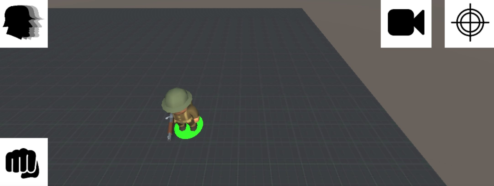
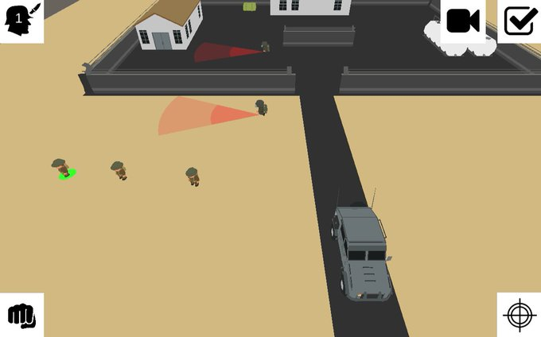

Soy el sargento Miquel y me encanta la saga Commandos.
Quién haya disfrutado este juego seguramente sienta nostalgia por el género ya que hoy en día no es tan popular como los shooters o fifas.
Commandos es un juego de estategia en el que controlas un grupo de soldados, donde tienes que superar misiones usando tu ingenio para aprovechar las habilidades únicas de cada soldado.
Como fan de la saga me gustaría revivir el género, pero no quiero limitarme a ser un clon, me gustaría hacer mi propia versión, aportar cosas nuevas a la jugabilidad y que se pueda jugar en PC y móviles.
Actualmente me encuentro desarrollando el juego a la vez que aprendo Unity3D, no tengo una fecha prevista de lanzamiento solo quiero disfrutar del camino y ver hasta donde puedo llegar.
Imágenes y vídeos del desarrollo


¿Te gusta lo que ves?
Sígueme en twitter para ver los progresos @vivirenremoto.